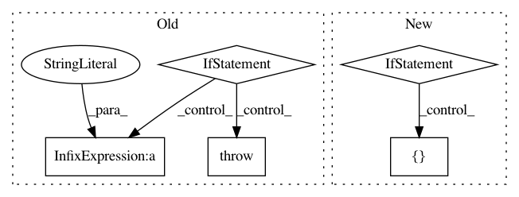

d1e6e624ef891543c5bba32bb0a696d350714693,coremltools/models/utils.py,,_convert_nn_spec_to_half_precision,#Any#,172
Before Change
"be converted manually".format(layer.name))
continue
elif layer_type in quantized_layers:
raise Exception("Half precision for " + layer_type +
" not yet implemented\n")
else:
raise Exception("Unknown layer " + layer_type)
return spec
After Change
"be converted manually".format(layer.name))
continue
if layer_type not in quantized_layers:
params = getattr(layer, layer_type, None)
params = params.ListFields() if params else []
param_types = [p[0].message_type.name if p[0].message_type else None for p in params]
if "WeightParams" in param_types:
raise NotImplementedError("Quantization for layer "" + layer_type + "" not implemented.")
continue // print("Skipping layer {}. No need to quantize.".format(layer.name))
// Convolution
if layer_type == "convolution":
_wp_to_fp16wp(layer.convolution.weights)
if layer.convolution.hasBias:
_wp_to_fp16wp(layer.convolution.bias)
In pattern: SUPERPATTERN
Frequency: 3
Non-data size: 5
Instances
Project Name: apple/coremltools
Commit Name: d1e6e624ef891543c5bba32bb0a696d350714693
Time: 2019-08-20
Author: smq@apple.com
File Name: coremltools/models/utils.py
Class Name:
Method Name: _convert_nn_spec_to_half_precision
Project Name: apple/coremltools
Commit Name: 78adbaaec2faf642d679faf1bc1ffb3b50c4a53f
Time: 2020-07-13
Author: dawergitesh@gmail.com
File Name: coremltools/converters/mil/frontend/torch/ops.py
Class Name:
Method Name: lstm
Project Name: apple/coremltools
Commit Name: 43656e4ec4052c705ac28b675bd151cba0c344a9
Time: 2019-10-04
Author: yuduo@apple.com
File Name: coremltools/converters/nnssa/coreml/ssa_converter.py
Class Name: SSAConverter
Method Name: _convert_batch_to_space_nd